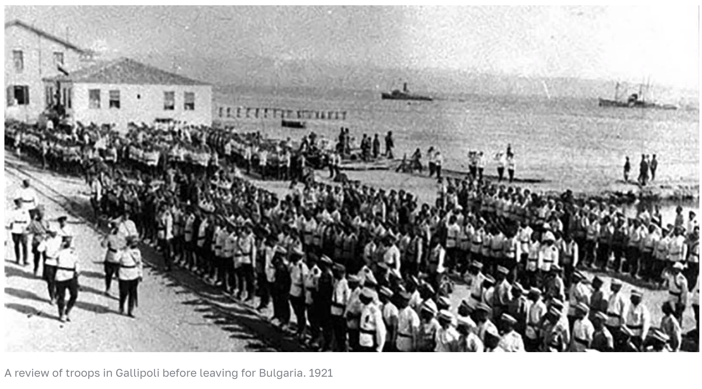

The first wave of Russian emigration (often called the White exodus) was a mass migration of roughly 1 to 2 million people who fled Russia following the 1917 Bolshevik Revolution and the subsequent Russian Civil War.
Who Fled
White Army and Military: Defeated soldiers, Cossacks, and officers of the anti-Bolshevik White movement.
Nobility and Gentry: Aristocrats, landowners, and dispossessed entrepreneurs.
Professionals: Writers, philosophers, scientists, doctors, and artists. (This wave notably included the forced deportation of thinkers on the "philosophers' ships" in 1922).
Clergy and Government Officials: Representatives of the fallen Russian Empire.

Major Destinations
Refugees initially gathered in transit hubs and foreign capitals where they tried to preserve Russian culture and build "another Russia" in exile:
Constantinople (Istanbul)
Berlin
Paris
Belgrade
Harbin and Shanghai (China)